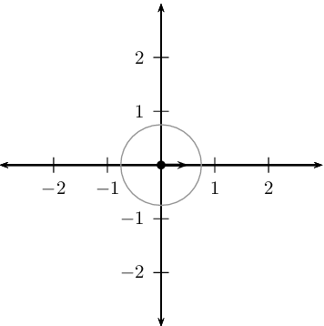
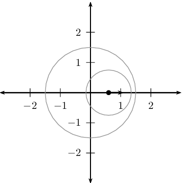
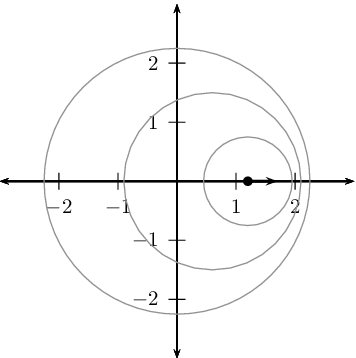
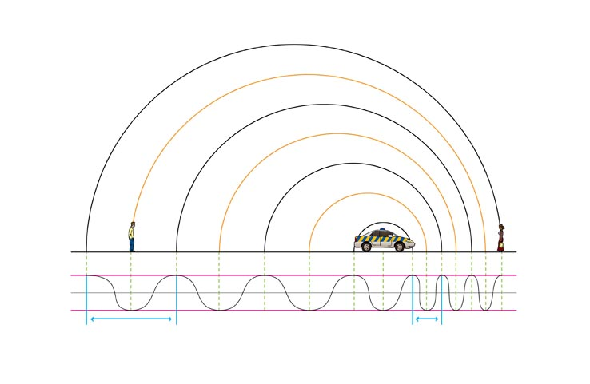
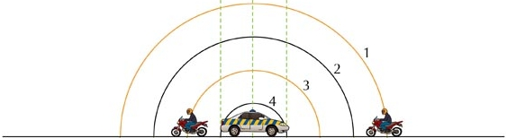
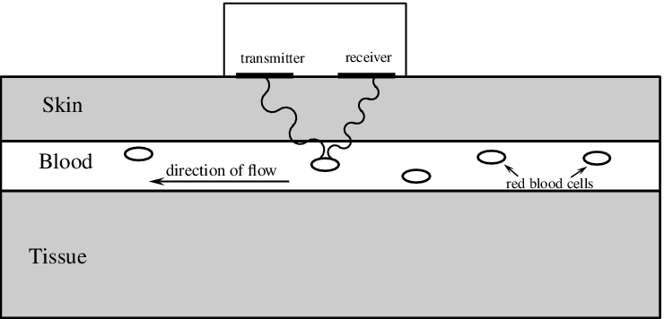
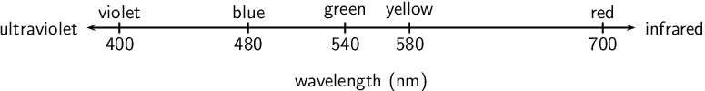
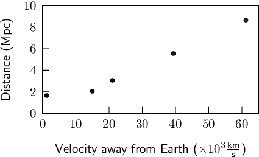
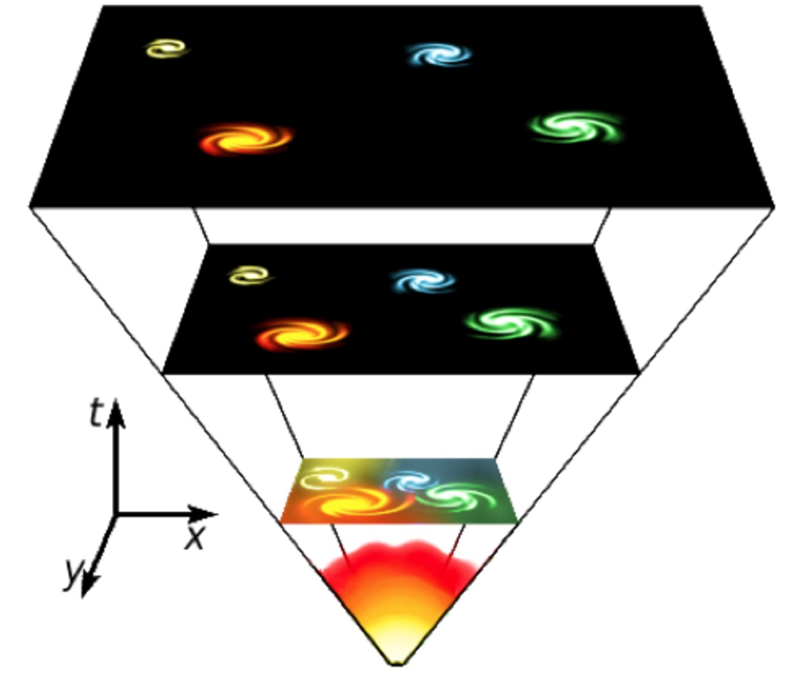

Suppose a train is approaching you as you stand on the platform at the station. As the train approaches the station, it slows down. All the while, the engineer is sounding the hooter at a constant frequency of \(\text{400}\)~\(\text{Hz}\). Describe the pitch and the changes in pitch that you hear. Assume the speed of sound in air is \(\text{340}\)~\(\text{m·s-1}\).
Doppler effect
Introduction
Have you noticed how the pitch of a police car or ambulance siren changes as it passes where you are standing. Or how an approaching car or train sounds different to when it is tavelling away from you? If you haven't, try to do an experiment by paying extra careful attention the next time it happens to see if you can notice a difference. This doesn't apply to just vehicles and trains but anything that emits waves, be those sound waves or light (electromagnetic waves).
The effect actually occurs if you move towards or away from the source of the sound as well. This effect is known as the Doppler effect and will be studied in this chapter.
Creating the Doppler effect in class
You can create the Doppler effect in class. One way of doing this is to get:
- string, and
- a tuning fork.
Tie the string to the base of the tuning fork. Strike the tuning fork to create a note and then hold the other end of the string and swing the tuning fork in circles in the air in a horizontal plane.
The string needs to be very securely tied to the tuning fork to ensure that it does not come loose during the demonstration.
The class should be able to hear that the frequency heard when the tuning fork is moving is different to the frequency heard when it is stationary.
The Doppler effect is named after Johann Christian Andreas Doppler (29 November 1803 - 17 March 1853), an Austrian mathematician and physicist who first explained the phenomenon in 1842.
- Units and unit conversions — Physical Sciences, Grade 10, Science skills
- Equations — Mathematics, Grade 10, Equations and inequalities
The Doppler effect with sound
You, the person hearing the sounds, are called the observer or listener and the thing emitting the sound is called the source. As mentioned in the introduction, there are two situations which lead to the Doppler effect:
-
When the source moves relative to the observer.
-
When the observer moves relative to the source.
In fact, both the source and the observer can be moving at the same time but we won't deal with that case in this chapter.
- Doppler effect
-
The Doppler effect occurs when a source of waves and/or observer move relative to each other, resulting in the observer measuring a different frequency of the waves than the frequency that the source is emitting.
The question that probably comes to mind is: "How does the Doppler effect come about?". We can understand what is happening by thinking through the situation in detail.
Case 1: Moving source, stationary observer
Let us consider a source of sound waves with a constant frequency and amplitude. The sound waves can be represented as concentric circles where each circle represents a creast or peak as the wavefronts radiate away from the source. This is because the waves travel away from the source in all directions and the distance between consecutive crests or consecutive troughs in a wave is constant (the wavelength as we learnt in Grade 10). In this figure the crests are represented by by the black lines and the troughs by the orange lines.

Stationary sound source as more wavefronts are emmitted.
The sound source is the police car in the middle and is stationary. For the Doppler effect to take place (manifest), the source must be moving relative to the observer. Let's consider the following situation: The source emits one wave (the circle represents the creat of the wave) that moves away from the source at the same rate in all directions. The distance between the crests represents the wavelength of the sound. The closer together the crests, the higher the frequency (or pitch) of the sound according to , where (speed of sound) is constant.

<code>
(-3,-3)(3,3)
\psaxes[dx=1]{}(0,0)(-3,-3)(3,3)
\pscircle*[linewidth=0.5pt](0cm,0cm){.08}
\psline[linewidth=1.25pt]{->}(0,0)(0.5,0)
\pscircle[linewidth=.5pt,linecolor=gray](0cm,0cm){.75}
</code>As this crest moves away, the source also moves and then emits more crests. Now the two circles are not concentric any more, but on the one side they are closer together and on the other side they are further apart. This is shown in the next diagram.

<code>
(-3,-3)(3,3)
\psaxes[dx=1]{}(0,0)(-3,-3)(3,3)
\pscircle*[linewidth=0.5pt](.6cm,0cm){.08}
\psline[linewidth=1.25pt]{->}(.6,0)(1.1,0)
\pscircle[linewidth=.5pt,linecolor=gray](0cm,0cm){1.5}\pscircle[linewidth=.5pt,linecolor=gray](.6cm,0cm){.75}
</code>If the source continues moving at the same speed in the same direction, then the distance between crests on the right of the source is constant. The distance between crests on the left is also constant. The distance between successive crests on the left is constant but larger than the distance between successive crests on the right.

<code>
(-3,-3)(3,3)
\psaxes[dx=1]{}(0,0)(-3,-3)(3,3)
\pscircle*[linewidth=0.5pt](1.2cm,0cm){.08}
\psline[linewidth=1.25pt]{->}(1.2,0)(1.7,0)
\pscircle[linewidth=.5pt,linecolor=gray](1.2cm,0cm){.75}\pscircle[linewidth=.5pt,linecolor=gray](.6cm,0cm){1.5}\pscircle[linewidth=.5pt,linecolor=gray](0cm,0cm){2.25}
</code>When a car approaches you, the sound waves that reach you have a shorter wavelength and a higher frequency. You hear a higher sound. When the car moves away from you, the sound waves that reach you have a longer wavelength and lower frequency. You hear a lower sound.
NOTE: Above is a placeholder plot to be improved and higher resolution
Case 2: Moving observer, stationary source
Just as we did before, let us consider a source of sound waves with a constant frequency and amplitude. There are two observers, one on the left that will move away from the source and one on the right that will move towards the source. We have three diagrams. The first diagram describes the overall situation, the second diagram shows the situation some time interval later and the third diagram is after another time interval. The wavefronts are numbered so you can see how they move further away and so that we can track which ones an observer has measured.

NOTE: Above is a placeholder plot to be improved and higher resolution
The observers can hear the waves emitted by the police car and after the first time interval they start to move.
NOTE: Above is a placeholder plot to be improved and higher resolution
It is important to remember that the frequency is the number of points that are in phase (for example crests or troughs) that pass a point (observer) in one second. We can compare the frequency the two observers measure but just counting how many wavefronts (these are all in phase) they measure in the time interval that has passed.
In the time interval that passed, the observer moving towards the police car observed the crests and troughs numbered 1 through 5 (the portion of the wave is highlighted below). The observer moving away encountered a smaller portion of the wavefront but in the same time interval. To the observers this will mean that the frequency they measured is different.

NOTE: Above is a placeholder plot to be improved and higher resolution
The motion of the observer will alter the frequency of the measured sound from a stationary source:
- An observer moving towards the source measures a higher frequency.
- An observer moving away from the source measures a lower frequency.
It is important to note that we have only looked at the cases where the source and observer are moving directly towards or away from each other and these are the only cases we will consider.
We didn't actually need to analyse both cases. We could have used either explanation because of relative motion. The case of a stationary source with moving observer is the same as the case of the stationary observer and the moving source because the relative motion is the same. Do you agree? Discuss with your friends and try to convince yourselves that this is the case. Being able to explain work to each other will help you understand it better. If you don't understand it, you won't be able to explain it convincingly.
For a real conceptual test, discuss what you think will happen if the source and the observer are both moving, in the same direction and at the same speed.
The formula that provides the relationship between the frequency emitted by the source and the frequency measured by the listener is:
- where is the frequency perceived by the observer (listener),
- is the frequency of the source,
- is the speed of the waves,
- the speed of the listener and
- the speed of the source.
Note: The signs show whether or not the relative motion of the source and observer is towards each other or away from each other:
Source moves towards listener | : negative |
Source moves away from listener | : positive |
Listener moves towards source | : positive |
Listener moves away from source | : negative |
Ambulance siren
The siren of an ambulance emits sound with a frequency of \(\text{700}\)~\(\text{Hz}\). You are standing on the pavement. If the ambulance drives past you at a speed of \(\text{20}\)~\(\text{m·s-1}\), what frequency will you hear, when
-
a) the ambulance is approaching you
-
b) the ambulance is driving away from you
Take the speed of sound in air to be \(\text{340}\)~\(\text{m·s-1}\).
Analyse the question
The question explicitly asks what frequency you will hear when the source is moving at a certain speed. This tells you immediately that the question is related to the Doppler shift. The values given in the question are all in S.I. units so no conversions are required.
Determine how to approach the problem based on what is given
We know that we are looking for the observed frequency with a moving source. The change is frequency can be calculated using:
To correctly apply this we need to confirm that it is valid and determine what signs we need to use for the various speeds. The observer is not moving but we have to consider two different cases, when the ambulance is moving towards the observer (a) and away from them (b). We have been told that if the source is moving towards the observer then we will use subtraction in the denominator and if it is moving away, addition. This means:
Determine when ambulance is approaching
Determine when ambulance has passed
Moving observer
What is the frequency heard by a person driving at \(\text{15}\)~\(\text{m·s-1}\) toward a factory whistle that is blowing at a frequency of \(\text{800}\)~\(\text{Hz}\). Assume that the speed of sound in air is \(\text{340}\)~\(\text{m·s-1}\).
Analyse the question
The question explicitly asks what frequency you will hear when the observer is moving at a certain speed. This tells you immediately that the question is related to the Doppler shift. The values given in the question are all in S.I. units so no conversions are required.
Determine how to approach the problem based on what is given
We can use:
with:
The listener is moving towards the source, so is positive and the source is stationary so .
Calculate the frequency
Write the final answer
The driver hears a frequency of \(\text{835,29}\)~\(\text{Hz}\).
Doppler effect [NSC 2011 Paper 1]
A train approaches a station at a constant speed of \(\text{20}\)~\(\text{m·s-1}\) with its whistle blowing at a frequency of \(\text{458}\)~\(\text{Hz}\). An observer, standing on the platform, hears a change in pitch as the train approaches him, passes him and moves away from him.
-
Name the phenomenon that explains the change in pitch heard by the observer.
(1 mark)
-
Calculate the frequency of the sound that the observer hears while the train is approaching him. Use the speed of sound in air as \(\text{340}\)~\(\text{m·s-1}\).
(4 marks)
-
How will the observed frequency change as the train passes and moves away from the observer? Write down only INCREASES, DECREASES or REMAINS THE SAME.
(1 mark)
-
How will the frequency observed by the train driver compare to that of the sound waves emitted by the whistle? Write down only GREATER THAN, EQUAL TO or LESS THAN. Give a reason for the answer.
(2 marks)
[TOTAL: 8 marks]
Question 1
Doppler effect
(1 mark)
Question 2
(4 marks)
Question 3
Decreases
(1 mark)
Question 4
Equal to, because ...
- the velocity of train driver relative to the whistle is zero. OR
- the train driver has same velocity as the whistle. OR
- there is no relative motion between source and observer.
(2 marks)
[TOTAL: 11 marks]
Ultrasound and the Doppler effect
Ultrasonic waves (ultrasound) are sound waves with a frequency greater than \(\text{20\ 000}\)~\(\text{Hz}\) (the upper limit of human hearing). These waves can be used in medicine to determine the direction of blood flow. The device, called a Doppler flow meter, sends out sound waves. The sound waves can travel through skin and tissue and will be reflected by moving objects in the body (like blood). The reflected waves return to the flow meter where its frequency (received frequency) is compared to the transmitted frequency. Because of the Doppler effect, blood that is moving towards the flow meter will change the sound to a higher frequency and blood that is moving away from the flow meter will cause a lower frequency.

<code>
(0,-2.99)(12.48,2.99)
\definecolor{color542b}{rgb}{0.8,0.8,0.8}
\psframe[linewidth=0.03,dimen=outer](7.68,2.99)(4.22,1.57)
\psframe[linewidth=0.04,dimen=outer,fillstyle=solid,fillcolor=color542b](12.48,1.61)(0.0,0.35)
\psframe[linewidth=0.04,dimen=outer](12.48,0.39)(0.0,-0.59)
\psframe[linewidth=0.04,dimen=outer,fillstyle=solid,fillcolor=color542b](12.48,-0.55)(0.0,-2.99)
\psline[linewidth=0.1cm](4.46,1.61)(5.54,1.61)
\psline[linewidth=0.1cm](6.38,1.61)(7.46,1.61)
\usefont{T1}{ptm}{m}{n}
\rput(1.1853125,1.065){\large Skin}
\usefont{T1}{ptm}{m}{n}
\rput(1.246875,0.0050){\large Blood}
\usefont{T1}{ptm}{m}{n}
\rput(1.0946875,-1.795){\large Tissue}
\psellipse[linewidth=0.04,dimen=outer](11.27,0.05)(0.27,0.14)
\psellipse[linewidth=0.04,dimen=outer](9.28,0.07)(0.28,0.14)
\psellipse[linewidth=0.04,dimen=outer](7.86,-0.29)(0.28,0.14)
\psellipse[linewidth=0.04,dimen=outer,fillstyle=solid](6.14,-0.07)(0.28,0.14)
\psellipse[linewidth=0.04,dimen=outer](2.62,0.13)(0.28,0.14)
\psline[linewidth=0.02cm,arrowsize=0.05291667cm 2.5, arrowlength=1.8,arrowinset=0.4]{->}(9.78,-0.29)(9.52,-0.07)
\psline[linewidth=0.02cm,arrowsize=0.05291667cm 2.5, arrowlength=1.8,arrowinset=0.4]{->}(10.78,-0.31)(11.08,-0.11)
\usefont{T1}{ptm}{m}{n}
\rput(10.385625,-0.415){\footnotesize red blood cells}
\psline[linewidth=0.03cm,arrowsize=0.05291667cm 3.0, arrowlength=2.0,arrowinset=0.4]{->}(5.46,-0.39)(2.82,-0.39)
\usefont{T1}{ptm}{m}{n}
\rput(4.185625,-0.17){\small direction of flow}
\usefont{T1}{ptm}{m}{n}
\rput(5.1528125,1.945){\footnotesize transmitter}
\usefont{T1}{ptm}{m}{n}
\rput(6.963281,1.965){\footnotesize receiver}
\rput{-50.339676}(0.66909426,4.2779965){\psarc[linewidth=0.03](4.8863683,1.427077){0.2}{0.0}{180.0}}
\rput{-230.33968}(9.284811,-2.1248512){\psarc[linewidth=0.03](5.141662,1.1191403){0.2}{0.0}{180.0}}
\rput{-50.339676}(1.3279321,4.448267){\psarc[linewidth=0.03](5.396956,0.81120366){0.2}{0.0}{180.0}}
\rput{-230.33968}(9.6821995,-3.5178099){\psarc[linewidth=0.03](5.667647,0.5160317){0.2}{0.0}{180.0}}
\rput{-50.339676}(1.9825133,4.6350083){\psarc[linewidth=0.03](5.9229407,0.20809498){0.2}{0.0}{180.0}}
\rput{-297.98828}(3.5001924,-5.4997945){\psarc[linewidth=0.03](6.325634,0.16207771){0.13266453}{333.73373}{180.0}}
\rput{-117.98829}(9.218058,6.2744603){\psarc[linewidth=0.03](6.4945035,0.36720476){0.13266453}{0.0}{180.0}}
\rput{-297.98828}(4.0436172,-5.5456667){\psarc[linewidth=0.03](6.63551,0.59124243){0.13266453}{0.0}{180.0}}
\rput{-297.98828}(4.5910735,-5.5441866){\psarc[linewidth=0.03](6.9080067,1.047437){0.13266453}{0.0}{180.0}}
\rput{-117.98829}(9.170905,7.1844506){\psarc[linewidth=0.03](6.744379,0.8363695){0.13266453}{0.0}{180.0}}
\rput{-117.98829}(9.168443,8.09536){\psarc[linewidth=0.03](7.0168757,1.292564){0.13266453}{0.0}{180.0}}
\rput{-297.98828}(5.13853,-5.5427065){\psarc[linewidth=0.03](7.1805034,1.5036315){0.13266453}{0.0}{180.0}}
</code>Ultrasound can be used to determine whether blood is flowing in the right direction in the circulation system of unborn babies, or identify areas in the body where blood flow is restricted due to narrow veins. The use of ultrasound equipment in medicine is called sonography or ultrasonography.

The Doppler effect with sound
Passengers on a train hear its whistle at a frequency of \(\text{740}\)~\(\text{Hz}\). Anja is standing next to the train tracks. What frequency does Anja hear as the train moves directly toward her at a speed of \(\text{25}\)~\(\text{m·s-1}\)? Assume the speed of sound in air is \(\text{340}\)~\(\text{m·s-1}\).
A small plane is taxiing directly away from you down a runway. The noise of the engine, as the pilot hears it, has a frequency \(\text{1,15}\) times the frequency that you hear. What is the speed of the plane? Assume the speed of sound in air is \(\text{340}\)~\(\text{m·s-1}\).
In places like Canada during winter temperatures can get as low as \(-\text{35}\)~\(\text{℃ }\). This affects the speed of sound in air and you can use the Doppler effect to determine what the speed of sound is. On a winters day in Canada with a temperature of \(-\text{35}\)~\(\text{℃ }\), a source emits sound at a frequency of \(\text{1050}\)~\(\text{Hz}\) and moves towards an observer at \(\text{25}\)~\(\text{m·s-1}\). The frequency that the observer measures is \(\text{971,41}\)~\(\text{Hz}\), what is the speed of sound?
The speed of sound in air at -35 degrees celsius is 309.5 m/s
How fast would an observer need to approach a source emitting sound with a frequency of \(\text{437,1}\)~\(\text{Hz}\) to observer a frequency that is 20 percent higher? Assume the speed of sound in air is \(\text{340}\)~\(\text{m·s-1}\). If they pass the source at this speed what frequency will they measure when moving away? What is a practical means of achieving this speed?
The Doppler effect with light
Light is a wave and earlier you learnt how you can study the properties of one wave and apply the same ideas to another wave. The same applies to sound and light. We know the Doppler effect is relevant in the context of sound waves when the source is moving. Therefore, in the context of light (EM waves), the frequency of observed light should be different to the emitted frequency when the source of the light is moving relative to the observer.
A frequency shift of light in the visible spectrum could result in a change of colour which could be observable with the naked eye. There will still be a frequency shift for wavelengths of EM radiation we cannot see.
We can apply all the ideas that we learnt about the Doppler effect to light. When talking about light we use slightly different terminology to describe what happens. If you look at the colour spectrum (more details in Chapter chap:electromagnetic-radiation) then you will see that blue light has a shorter wavelength than red light. Relative to the middle of the visible spectrum (approximately green light) longer wavelengths are more red and shorter wavelengths are more blue. So we call shifts towards longer wavelengths "redshifts" and shifts towards shorter wavelengths "blueshifts".

<code>
(0,-1.2)(10.2,0.6)
\psset{xunit=3}
\psline{}(0,0)(3.4,0)
\rput(0.2,0){\psline(0,-0.1)(0,0.1)}
\rput(1,0){\psline(0,-0.1)(0,0.1)}
\rput(1.6,0){\psline(0,-0.1)(0,0.1)}
\rput(2,0){\psline(0,-0.1)(0,0.1)}
\rput(3.2,0){\psline(0,-0.1)(0,0.1)}
\uput[u](0.2,0){violet}
\uput[d](0.2,0){400}
\uput[u](1,0){blue}
\uput[d](1,0){480}
\uput[u](1.6,0){green}
\uput[d](1.6,0){540}
\uput[u](2,0){yellow}
\uput[d](2,0){580}
\uput[u](3.2,0){red}
\uput[d](3.2,0){700}
\uput[l](0,0){ultraviolet}
\uput[r](3.4,0){infrared}
\rput(1.7,-1){wavelength (nm)}
</code>Blue light has a shorter wavelength than red light.
A shift in wavelength implies that there is also a shift in frequency (). Longer wavelengths of light have lower frequencies and shorter wavelengths have higher frequencies. From the Doppler effect we know that when the source moves towards the observer any waves they emit that you measure are shifted to shorter wavelengths (blueshifted). If the source moves away from the observer, the shift is to longer wavelengths (redshifted).
The expanding universe
Stars emit light, which is why we can see them at night. Galaxies are huge collections of stars. An example is our own Galaxy, the Milky Way, of which our sun is only one of the billions of stars!
Using large telescopes like the Southern African Large Telescope (SALT) in the Karoo, astronomers can measure the light from distant galaxies. The spectrum of light can tell us what elements are in the stars in the galaxies because each element has unique energy levels and therefore emits or absorbs light at particular wavelengths. These characteristic wavelenghts are called spectral lines because the show up as discrete frequencies in the spectrum of light from the star.

If these lines are observed to be shifted from their usual wavelengths to shorter wavelengths, then the light from the galaxy is said to be blueshifted. If the spectral lines are shifted to longer wavelengths, then the light from the galaxy is said to be redshifted. If we think of the blueshift and redshift in Doppler effect terms, then a blueshifted galaxy would appear to be moving towards us (the observers) and a redshifted galaxy would appear to be moving away from us.
1. If the light source is moving away from the observer (positive velocity) then the observed frequency is lower and the observed wavelength is greater (redshifted).
2. If the source is moving towards the observer (negative velocity), the observed frequency is higher and the wavelength is shorter (blueshifted).
Edwin Hubble (20 November 1889 - 28 September 1953) measured the Doppler shift of a large sample of galaxies. He found that the light from distant galaxies is redshifted and he discovered that there is a proportionality relationship between the redshift and the distance to the galaxy. Galaxies that are further away always appear more redshifted than nearby galaxies. Remember that a redshift in Doppler terms means a velocity of the light source away from the observer. So why do all distant galaxies appear to be moving away from our Galaxy? None of them seem to be moving towards us.

<code>
(-2,-2)(7,5)
\def\data{
1210 170
15000 210
21000 310
39300 560
61200 870
}
\pstScalePoints(.001,.01){}{}
\psset{ axesstyle=frame,
xAxisLabel={Velocity away from Earth ($\times 10^3 \frac{\text{km}}{\text{s}}$)},
yAxisLabel={Distance (Mpc)},
xAxisLabelPos={c,-1cm},
yAxisLabelPos={-1cm,c}
}
\begin{psgraph}[ticksize=5pt 0,Dx=10, Dy=2](0,0)(0,0)(65,10){6cm}{3cm}
\listplot[showpoints=true,plotstyle=colordots, linecolor=blue]{\data}
\end{psgraph}
</code>The reason is that the universe is expanding! Some of the galaxies will be moving in our direction but more slowly than the space between us and them is expanding. The expansion is so large that it is the primary effect that we observe. The light isn't actually redshifted because all of the Doppler effect, it is redshifted because the space is expanding, the waves are being stretched out.
You might think that this means we are at the centre of the universe. This isn't correct, the situation will look the same from every galaxy because space is expanding in all directions.
Hubble Law is:
where latest value of is \(\text{67,15}\)~\(\text{km.s-1.Mpc-1}\) (rate of expansion of the Universe). Latest value from Planck mission, 2013.
There are two things you can do to help you visualise this a little better. One thing to try is to get a balloon and draw some dots on it with a marker. As you blow the balloon up all the dots get further away from all the other dots. The dots represent galaxies in a two-dimensional, expanding universe (the balloon surface). Another thing to imagine is baking raisin bread. As the bread rises, the distance between all the raisins gets larger. Every raisin thinks that all the other raisins are moving away from it.
In this picture the bottom vertex represents the beginning of time, the flat surface represents space. As you move up through the panels you are moving later in time and the expansion of the the flat surface shows the expansion of the universe. The galaxies shown on the surface get further away from each other just because of the expansion of space.
Chapter summary
-
The Doppler effect is an observed change in frequency due to the relative motion of a source and an observer.
-
The following equation can be used to calculate the frequency of the wave according to the observer or listener:
-
If the direction of the wave from the listener to the source is chosen as positive, the velocities have the following signs:
Source moves towards listener
: negative
Source moves away from listener
: positive
Listener moves towards source
: positive
Listener moves away from source
: negative
-
The Doppler effect can be observed in all types of waves, including ultrasound, light and radiowaves.
-
Sonography makes use of ultrasound and the Doppler effect to determine the direction of blood flow.
-
Light is emitted by stars. Due to the Doppler effect, the frequency of this light decreases and the stars appear redder than if they were stationary. This is called a red shift and means that the stars are moving away from the Earth. This is one of the reasons we can conclude that the Universe is expanding.
| Physical Quantities | ||
| Quantity | Unit name | Unit symbol |
| Frequency () | Hertz | \(\text{Hz}\) |
| Speed () | metres per second | \(\text{m·s-1}\) |
Units used in Doppler effect.
Write a definition for each of the following terms.
-
Doppler effect
-
Red-shift
-
Ultrasound
The hooter of an approaching taxi has a frequency of \(\text{500}\)~\(\text{Hz}\). If the taxi is travelling at \(\text{30}\)~\(\text{m·s-1}\) and the speed of sound is \(\text{340}\)~\(\text{m·s-1}\), calculate the frequency of sound that you hear when
-
the taxi is approaching you.
-
the taxi passed you and is driving away.
Draw a sketch of the observed frequency as a function of time.
A truck approaches you at an unknown speed. The sound of the trucks engine has a frequency of \(\text{210}\)~\(\text{Hz}\), however you hear a frequency of \(\text{220}\)~\(\text{Hz}\). The speed of sound is \(\text{340}\)~\(\text{m·s-1}\).
-
Calculate the speed of the truck.
-
How will the sound change as the truck passes you? Explain this phenomenon in terms of the wavelength and frequency of the sound.
[Extension question] A police car is driving towards a fleeing suspect at , where v is the speed of sound. The frequency of the police car's siren is \(\text{400}\)~\(\text{Hz}\). The suspect is running away at . What frequency does the suspect hear?
-
Why are ultrasound waves used in sonography and not audible sound waves?
-
Explain how the Doppler effect is used to determine the direction of flow of blood in veins.